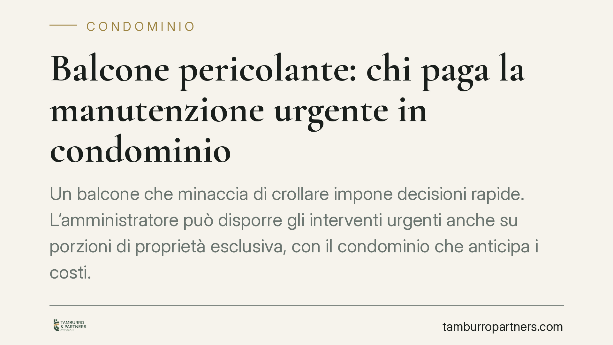

Balcone pericolante: chi paga la manutenzione urgente in condominio
Un balcone che minaccia di crollare impone decisioni rapide. L'amministratore può disporre gli interventi urgenti anche su porzioni di proprietà esclusiva, con il condominio che anticipa i costi. Ma il conto finale segue regole precise, distinguendo tra ciò che è comune e ciò che appartiene al singolo. Vediamo chi paga davvero e come muoversi.

Il caso
Un balcone lesionato, con distacchi di intonaco o cedimenti strutturali, non è solo un problema estetico: è un pericolo concreto per chi passa sotto. In queste situazioni il tempo conta, e la domanda diventa immediata: chi decide gli interventi e chi ne sopporta il costo?
Una recente pronuncia della Corte d'appello di Salerno ha ribadito i principi già consolidati, confermando che l'urgenza legittima l'amministratore ad agire anche oltre i confini delle parti comuni.
Inquadramento normativo
Il riferimento è l'art. 1135, ultimo comma, del Codice civile. La norma consente all'amministratore di ordinare lavori di manutenzione straordinaria che rivestano carattere urgente, senza attendere la delibera assembleare. In tal caso deve però riferirne all'assemblea alla prima occasione utile.
L'urgenza è il presupposto che sblocca il potere di intervento immediato: si tratta di opere che, se rinviate, esporrebbero persone o cose a un danno grave e imminente. Il rischio di crollo di un balcone rientra pienamente in questa categoria.
Il punto delicato riguarda il *balcone* in sé. La giurisprudenza distingue tra:
- i frontalini, i cielini e i rivestimenti che, se svolgono funzione decorativa dell'intera facciata, sono considerati parti comuni ai sensi dell'art. 1117 c.c.;
- la soletta e la struttura portante del balcone "aggettante" (cioè sporgente dalla facciata), che appartengono di regola al proprietario dell'appartamento cui il balcone accede.
Questa distinzione è decisiva perché determina, a monte, chi deve farsi carico della spesa.
Implicazioni pratiche
Davanti a un pericolo di crollo, l'amministratore può ordinare i lavori urgenti anche se essi interessano una porzione di proprietà esclusiva. La ragione è tutela della sicurezza collettiva: un balcone che cede mette a rischio l'incolumità di terzi e la responsabilità dello stesso condominio.
Sul piano economico, il condominio anticipa le somme necessarie all'intervento. Non è però l'ultimo passaggio. Una volta eseguiti i lavori e ripristinata la sicurezza, si procede alla ripartizione secondo la natura delle parti riparate:
- se l'intervento riguarda elementi che decorano la facciata (e quindi comuni), il costo grava su tutti i condomini secondo i millesimi;
- se riguarda la struttura del balcone di proprietà esclusiva, la spesa resta a carico del singolo proprietario, verso il quale il condominio esercita la rivalsa.
In concreto, il proprietario dell'appartamento non può sottrarsi ai costi che riguardano la parte a lui appartenente, invocando il fatto che l'ordine sia partito dall'amministratore. L'urgenza legittima l'anticipo, non muta la titolarità della spesa.
Per il condominio, l'errore più frequente è non documentare adeguatamente l'urgenza e la ripartizione. Una perizia tecnica che attesti il pericolo e individui con precisione le parti interessate è lo strumento che regge sia la legittimità dell'intervento sia la successiva richiesta di rimborso.
Cosa fare in concreto
- Documentate il pericolo. Fate redigere una perizia tecnica che accerti il rischio di crollo e distingua le porzioni comuni da quelle di proprietà esclusiva.
- Verificate il presupposto dell'urgenza. L'amministratore agisca senza delibera solo di fronte a un pericolo grave e imminente; negli altri casi convochi l'assemblea.
- Riferite all'assemblea. Portate l'intervento urgente all'attenzione dei condomini alla prima riunione utile, con rendiconto delle spese sostenute.
- Ripartite secondo la natura delle parti. Attribuite i costi in base alla distinzione tra elementi comuni della facciata e struttura del balcone esclusivo.
- Formalizzate la rivalsa. Se la spesa compete al singolo proprietario, richiedete per iscritto il rimborso della quota anticipata dal condominio.
La gestione di questi interventi tocca insieme profili di sicurezza, responsabilità e riparto delle spese. Consigliamo di affrontarli con una valutazione tecnica e giuridica preventiva, prima che l'urgenza costringa a decisioni affrettate e a contenziosi successivi tra condominio e proprietario.
---
*Contributo informativo a cura di Tamburro & Partners - Avv. Giuseppe Tamburro. Non costituisce parere legale.*
Ogni condominio ha una storia a sé.
Se gestisci un'amministrazione e vuoi un confronto su una specifica questione condominiale, scrivi allo studio. Ti rispondiamo entro un giorno lavorativo.